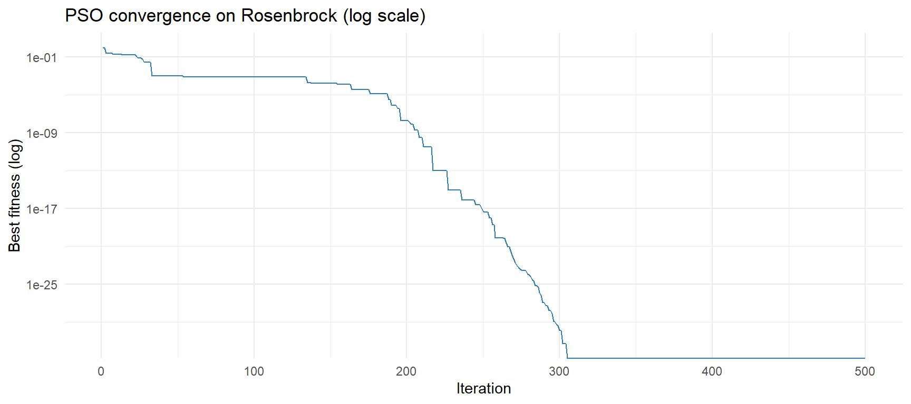
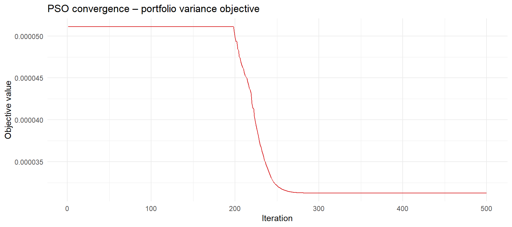
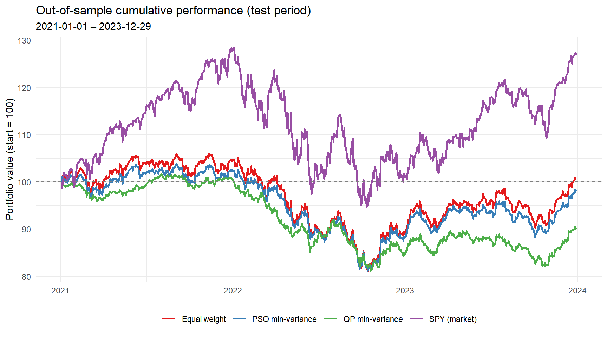
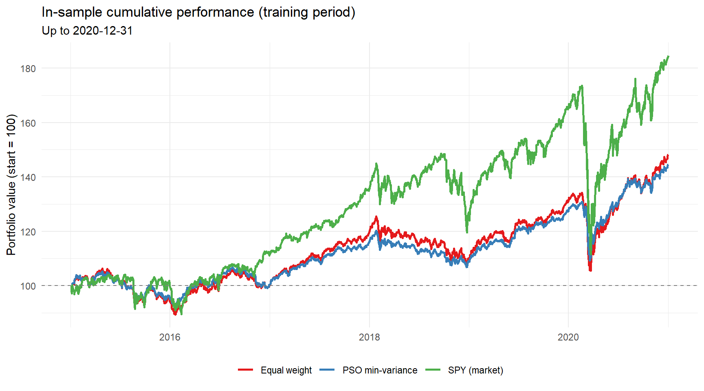
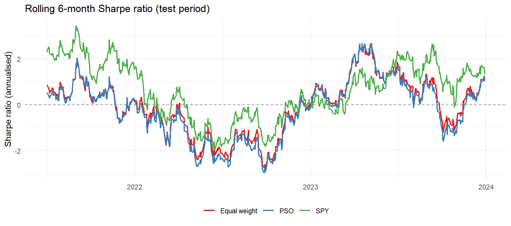

In this post we leave the world of closed-form solutions behind. While the minimum variance portfolio and the CAPM can be solved analytically or with a quadratic programming solver, many realistic portfolio problems cannot. As soon as we add transaction costs, cardinality constraints or non-convex risk measures, the optimization problem loses the nice structure that solvers like quadprog rely on. This is where Particle Swarm Optimization (PSO) enters the stage. PSO is a population-based, stochastic meta-heuristic inspired by the flocking behaviour of birds (Kennedy and Eberhart (1995)). It only requires an objective function \(f(\mathbf{x})\) and does not need any gradients, which makes it a natural candidate for non-convex, non-differentiable or heavily constrained problems.
The idea is remarkably simple. A swarm of \(s\) particles explores the search space, where each particle \(i\) carries a current position \(\mathbf{x}_i\) (a candidate solution), a velocity \(\mathbf{v}_i\), its personal best position \(\mathbf{p}_i\) found so far, and knowledge of the global best position \(\mathbf{g}\) found by any particle. At each iteration, velocity and position are updated as follows:
\[ \mathbf{v}_i \leftarrow \underbrace{w \, \mathbf{v}_i}_{\text{inertia}} + \underbrace{c_p \, r_p \odot (\mathbf{p}_i - \mathbf{x}_i)}_{\text{cognitive (personal best)}} + \underbrace{c_g \, r_g \odot (\mathbf{g} - \mathbf{x}_i)}_{\text{social (global best)}} \] \[ \mathbf{x}_i \leftarrow \mathbf{x}_i + \mathbf{v}_i \]
where \(r_p, r_g \sim \mathcal{U}(0,1)\) are drawn fresh each iteration, \(\odot\) denotes element-wise multiplication, and the inertia weight \(w\) decreases linearly from \(w_0\) to \(w_N\) in order to balance exploration early on and exploitation later (Hu et al. (2003)). A comprehensive overview of PSO variants and their convergence behaviour is given by Parsopoulos and Vrahatis (2002). The implementation below follows the standard scheme and is all we need for the rest of this post.
# Helper: uniform random matrix
mrunif <- function(nr, nc, lower, upper) {
matrix(runif(nr * nc), nrow = nr, ncol = nc) * (upper - lower) + lower
}
# Standard PSO (minimisation)
pso_default <- function(par, fn, lower, upper, control = list()) {
ctrl <- list(
s = 30, # swarm size
c.p = 0.5, # cognitive weight
c.g = 0.5, # social weight
maxiter = 300, # iterations
w0 = 1.2, # initial inertia
wN = 0.0, # final inertia
save_fit = FALSE # track best fitness per iteration
)
ctrl[names(control)] <- control # override defaults
n <- length(par)
s <- ctrl$s
# Initialise positions & velocities
X <- mrunif(n, s, lower, upper)
X[, 1] <- par # seed first particle
V <- mrunif(n, s, -(upper - lower), upper - lower) / 10
X_fit <- apply(X, 2, fn)
P <- X
P_fit <- X_fit
p_g <- P[, which.min(P_fit)]
p_g_fit <- min(P_fit)
fit_trace <- if (ctrl$save_fit) numeric(ctrl$maxiter) else NULL
for (i in seq_len(ctrl$maxiter)) {
w <- ctrl$w0 - (ctrl$w0 - ctrl$wN) * i / ctrl$maxiter # linear decay
# Velocity update
V <- w * V + ctrl$c.p * t(runif(s) * t(P - X)) + ctrl$c.g * t(runif(s) * t(p_g - X))
X <- X + V
# Boundary handling: absorb & zero velocity
V[X > upper] <- 0
X[X > upper] <- upper
V[X < lower] <- 0
X[X < lower] <- lower
X_fit <- apply(X, 2, fn)
# Update personal bests
improved <- P_fit > X_fit
P[, improved] <- X[, improved]
P_fit[improved] <- X_fit[improved]
# Update global best
if (min(P_fit) < p_g_fit) {
p_g <- P[, which.min(P_fit)]
p_g_fit <- min(P_fit)
}
if (ctrl$save_fit) fit_trace[i] <- p_g_fit
}
list(solution = p_g, fitness = p_g_fit, fit_trace = fit_trace)
}Before we let the swarm loose on a portfolio, let us verify that it works on a classic benchmark. The Rosenbrock function \(f(x,y) = (1-x)^2 + 100(y-x^2)^2\) has its global minimum at \((1,1)\) with \(f=0\) and is notoriously hard because the minimum lies in a narrow curved valley.
set.seed(0)
rosenbrock <- function(x) (1 - x[1])^2 + 100 * (x[2] - x[1]^2)^2
res <- pso_default(
par = c(0, 0),
fn = rosenbrock,
lower = -2,
upper = 2,
control = list(s = 40, maxiter = 500, save_fit = TRUE)
)
cat("Solution: x =", round(res$solution, 4), "| f(x) =", round(res$fitness, 6))## Solution: x = 1 1 | f(x) = 0ggplot(data.frame(iter = seq_along(res$fit_trace), fitness = res$fit_trace), aes(iter, fitness)) +
geom_line(colour = "#2c7bb6") +
scale_y_log10() +
labs(title = "PSO convergence on Rosenbrock (log scale)", x = "Iteration", y = "Best fitness (log)") +
theme_minimal()
As investment universe we use five diversified ETFs covering US large-cap equities (SPY), developed ex-US equities (EFA), emerging market equities (EEM), US 7–10 year Treasuries (IEF) and gold (GLD). Daily adjusted prices are downloaded from Yahoo Finance and converted into log returns. We then split the sample into a training period for the optimization and a test period for an honest out-of-sample evaluation — a step that is omitted surprisingly often, even though any in-sample result is essentially meaningless for portfolio selection.
tickers <- c("SPY", "EFA", "EEM", "IEF", "GLD")
# Download adjusted prices from Yahoo Finance
e <- new.env()
getSymbols(tickers, env = e, from = "2015-01-01", to = "2023-12-31", auto.assign = TRUE, warnings = FALSE)## [1] "SPY" "EFA" "EEM" "IEF" "GLD"# Extract adjusted close prices, align dates
prices <- do.call(cbind, lapply(tickers, function(t) Ad(e[[t]])))
colnames(prices) <- tickers
prices <- na.locf(prices)
# Daily log returns
returns <- diff(log(prices))[-1, ]
cat("Date range:", format(start(returns)), "to", format(end(returns)), "| Observations:", nrow(returns))## Date range: 2015-01-05 to 2023-12-29 | Observations: 2263train_end <- as.Date("2020-12-31")
test_start <- as.Date("2021-01-01")
ret_train <- returns[paste0("/", train_end)]
ret_test <- returns[paste0(test_start, "/")]
cat("Train:", nrow(ret_train), "days | Test:", nrow(ret_test), "days")## Train: 1510 days | Test: 753 daysAs objective we revisit the classical minimum variance portfolio of Markowitz (1952) and minimise the portfolio variance \(\sigma^2_p = \mathbf{w}^\top \Sigma \mathbf{w}\) subject to full investment (\(\sum_i w_i = 1\)) and a long-only constraint (\(w_i \geq 0\)). The long-only constraint is handled directly via the box constraints of the swarm, while the equality constraint is soft-penalised inside the objective, so that any solution violating it becomes unattractive to the swarm:
\[\min_{\mathrm{w}\in \mathbb{R}^{n}} \ w'\Sigma w+\lambda\,(w'1-1)^{2} \ \text{ subject to } \ 0 \leq w_{i}\leq 1\]
Sigma <- cov(ret_train) # sample covariance on training data
n_assets <- ncol(ret_train)
# Penalty coefficient for sum-to-one constraint
lambda <- 1e4
obj_fn <- function(w) {
port_var <- as.numeric(t(w) %*% Sigma %*% w)
constraint <- lambda * (sum(w) - 1)^2 # soft equality penalty
port_var + constraint
}We now run the swarm on the training data and compare the resulting weights against two benchmarks: the naive equal-weight portfolio and the exact minimum variance solution obtained with the analytical quadprog solver. Since the minimum variance problem is a convex quadratic programme, the QP solution serves as ground truth — if PSO works, its weights should land very close to it.
set.seed(42)
# --- PSO min-variance ---
pso_res <- pso_default(
par = rep(1 / n_assets, n_assets),
fn = obj_fn,
lower = 0,
upper = 1,
control = list(s = 60, maxiter = 500, save_fit = TRUE)
)
w_pso <- pso_res$solution / sum(pso_res$solution) # renormalise
# --- Equal-weight benchmark ---
w_ew <- rep(1 / n_assets, n_assets)
# --- Min-variance via analytical solver (quadprog) for reference ---
w_qp <- tryCatch(
{
library(quadprog)
Dmat <- 2 * Sigma
dvec <- rep(0, n_assets)
Amat <- cbind(rep(1, n_assets), diag(n_assets))
bvec <- c(1, rep(0, n_assets))
qp <- solve.QP(Dmat, dvec, Amat, bvec, meq = 1)
qp$solution / sum(qp$solution)
},
error = function(e) NULL
)
# Print weights
weights_df <- data.frame(
Asset = tickers,
PSO = round(w_pso, 4),
EqualWeight = round(w_ew, 4)
)
if (!is.null(w_qp)) {
weights_df$QP_Reference <- round(w_qp, 4)
}
print(weights_df)## Asset PSO EqualWeight QP_Reference
## 1 SPY 0.1417 0.2 0.1219
## 2 EFA 0.1662 0.2 0.0438
## 3 EEM 0.1469 0.2 0.0000
## 4 IEF 0.3326 0.2 0.8342
## 5 GLD 0.2127 0.2 0.0000ggplot(data.frame(iter = seq_along(pso_res$fit_trace), fitness = pso_res$fit_trace), aes(iter, fitness)) +
geom_line(colour = "#d7191c") +
labs(title = "PSO convergence – portfolio variance objective", x = "Iteration", y = "Objective value") +
theme_minimal()
The proof of the pudding is in the out-of-sample period. We hold the weights fixed and track the cumulative performance of the PSO minimum variance portfolio, the equal-weight portfolio and the market (SPY) over the test period.
# Portfolio return series helper
port_returns <- function(ret_xts, weights) {
xts(as.numeric(ret_xts %*% weights), order.by = index(ret_xts))
}
# Cumulative return index (start = 100)
cum_ret_idx <- function(ret_xts) {
cumprod(1 + c(0, as.numeric(ret_xts))) * 100
}
# Build return series for both periods
pso_train <- port_returns(ret_train, w_pso)
ew_train <- port_returns(ret_train, w_ew)
pso_test <- port_returns(ret_test, w_pso)
ew_test <- port_returns(ret_test, w_ew)
# SPY as market benchmark
spy_test <- returns[paste0(test_start, "/"), "SPY"]
spy_train <- returns[paste0("/", train_end), "SPY"]
# --- Performance metrics helper ---
perf_metrics <- function(ret_vec, label) {
r <- as.numeric(ret_vec)
ann <- 252
data.frame(
Strategy = label,
Ann_Return = round((prod(1 + r)^(ann / length(r)) - 1) * 100, 2),
Ann_Vol = round(sd(r) * sqrt(ann) * 100, 2),
Sharpe = round((mean(r) / sd(r)) * sqrt(ann), 2),
MaxDrawdown = round(max(cummax(cumprod(1 + r)) - cumprod(1 + r)) * 100, 2)
)
}
metrics <- bind_rows(
perf_metrics(pso_test, "PSO min-variance"),
perf_metrics(ew_test, "Equal weight"),
perf_metrics(spy_test, "SPY (market)")
)
if (!is.null(w_qp)) {
qp_test <- port_returns(ret_test, w_qp)
metrics <- bind_rows(metrics, perf_metrics(qp_test, "QP min-variance"))
}
print(metrics, row.names = FALSE)## Strategy Ann_Return Ann_Vol Sharpe MaxDrawdown
## PSO min-variance -0.66 9.80 -0.02 22.61
## Equal weight 0.24 11.37 0.08 24.84
## SPY (market) 8.29 17.61 0.54 33.65
## QP min-variance -3.45 7.96 -0.40 20.52# Build long-format data frame for ggplot
build_cum_df <- function(ret_xts, label) {
dates <- c(index(ret_xts)[1] - 1, index(ret_xts))
data.frame(
Date = dates,
Index = cum_ret_idx(ret_xts),
Series = label
)
}
plot_df <- bind_rows(
build_cum_df(pso_test, "PSO min-variance"),
build_cum_df(ew_test, "Equal weight"),
build_cum_df(spy_test, "SPY (market)")
)
if (!is.null(w_qp)) {
plot_df <- bind_rows(plot_df, build_cum_df(qp_test, "QP min-variance"))
}
ggplot(plot_df, aes(Date, Index, colour = Series)) +
geom_line(linewidth = 0.9) +
geom_hline(yintercept = 100, linetype = "dashed", colour = "grey50") +
scale_colour_brewer(palette = "Set1") +
labs(
title = "Out-of-sample cumulative performance (test period)",
subtitle = paste0(test_start, " – ", max(plot_df$Date)),
y = "Portfolio value (start = 100)",
x = NULL,
colour = NULL
) +
theme_minimal() +
theme(legend.position = "bottom")
For completeness, the in-sample performance during the training period is shown below. Keep in mind that the minimum variance weights were fitted on exactly this data, so the smooth ride here is partly by construction.
train_df <- bind_rows(
build_cum_df(pso_train, "PSO min-variance"),
build_cum_df(ew_train, "Equal weight"),
build_cum_df(spy_train, "SPY (market)")
)
ggplot(train_df, aes(Date, Index, colour = Series)) +
geom_line(linewidth = 0.9) +
geom_hline(yintercept = 100, linetype = "dashed", colour = "grey50") +
scale_colour_brewer(palette = "Set1") +
labs(
title = "In-sample cumulative performance (training period)",
subtitle = paste0("Up to ", train_end),
y = "Portfolio value (start = 100)",
x = NULL,
colour = NULL
) +
theme_minimal() +
theme(legend.position = "bottom")
Finally, a rolling 6-month Sharpe ratio over the test period shows how the risk-adjusted performance of the three strategies evolves over time.
rolling_sharpe <- function(ret_xts, window = 126) {
r <- as.numeric(ret_xts)
n <- length(r)
if (n < window) {
return(NULL)
}
idx <- index(ret_xts)[window:n]
sh <- sapply(window:n, function(i) {
w_ret <- r[(i - window + 1):i]
mean(w_ret) / sd(w_ret) * sqrt(252)
})
xts(sh, order.by = idx)
}
rs_pso <- rolling_sharpe(pso_test)
rs_ew <- rolling_sharpe(ew_test)
rs_spy <- rolling_sharpe(spy_test)
if (!is.null(rs_pso)) {
rs_df <- bind_rows(
data.frame(Date = index(rs_pso), Sharpe = as.numeric(rs_pso), Series = "PSO"),
data.frame(Date = index(rs_ew), Sharpe = as.numeric(rs_ew), Series = "Equal weight"),
data.frame(Date = index(rs_spy), Sharpe = as.numeric(rs_spy), Series = "SPY")
)
ggplot(rs_df, aes(Date, Sharpe, colour = Series)) +
geom_line(linewidth = 0.8) +
geom_hline(yintercept = 0, linetype = "dashed", colour = "grey50") +
scale_colour_brewer(palette = "Set1") +
labs(title = "Rolling 6-month Sharpe ratio (test period)", y = "Sharpe ratio (annualised)", x = NULL, colour = NULL) +
theme_minimal() +
theme(legend.position = "bottom")
}
Some PSO variations, such as binary PSO for cardinality-constrained portfolios, as well as more realistic constraint handling are discussed in upcoming posts.